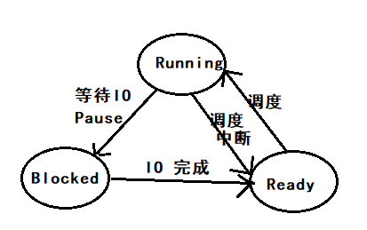
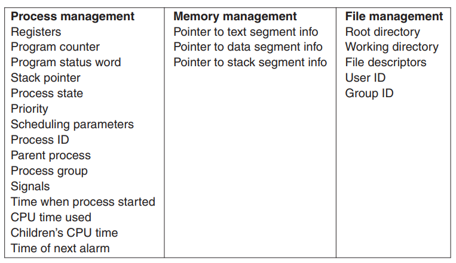
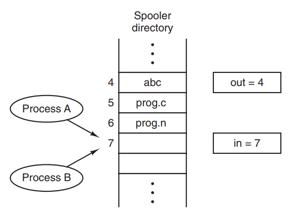

第二章：进程与线程
[TOC]
引入进程的重要性
进程概念的引入，使得多个任务可以在一个 CPU 上并发执行，实现了 CPU 的虚拟化，提高了 CPU 的利用率。
进程：Processes
Pseudoparallelism 伪并行
在一个单核的操作系统中，任何一个时刻，CPU 都只在做一件事情，CPU 通过在多个任务之前来回切换，来实现进程的并发。
注意：pseudoparallelism 和 hardware parallelism of multiprocessor systems 有本质的区别，后者是真正的在多个 CPU 上进行并行计算。
进程的定义: Process Model 进程模型
进程就是运行在计算机上的任务。所有在计算机上执行的任务，包括操作系统，都被看做一个进程。In process model, each has its own virtual cpu.
Program and Process 的区别
Program 是静态的，而 process 是动态的。进程是运行着的程序。
进程的创建：Process Creation
操作系统中创建进程的几个场景
从创建进程的发起者角度，可以分为三个场景：
| 发起者 | short-desc | desc |
|---|---|---|
| 操作系统 | 系统初始化创建大量进程 | 系统在初始化的时候，会创建大量的进程，有很多都是常驻后台的守护进程 |
| 进程 | 进程发起 process-creation 的系统调用，创建子进程 | 如果一个任务可以由多个进程协作，并且高效的完成时，进程就可以通过系统调用创建多个子进程，用于工作协同，加快效率 |
| 用户 | 用户请求创建一个进程 | 在类 Unix 系统中，用户可以通过在 shell 中输入命令，创建子进程；在 Windows 系统中，用户可以通过操作鼠标键盘，打开软件（创建进程） |
实际上，上述所有的进程创建，都是父进程通过发起创建进程的系统调用，由操作系统创建的子进程。区别在于，进程创建的发起者不同，是操作系统，还是正在运行的进程，还是用户。What that process does is execute a system call to create the new process.
进程的分类
-
Background Process
后台进程，后台进程中有一类特殊的进程，类似邮件服务/Web服务/打印服务等任务叫做 daemons （守护进程），Linux 中通过在 cmd 后面加上
&来实现后台进程，例如：sleep 100& -
Foreground Process
前台进程，与用户交互，Linux 中的 shell 就是一个前台进程，用于和用户进行交互
创建进程的系统调用
-
In Unix： fork
在 Unix 系统中，只有唯一的一个系统调用：fork，用于创建进程
fork 会对发起系统调用的进程，创建一个完全一样的副本（相同的内存镜像，相同的环境变量），也就是 fork 一个子进程。例如用户在 shell 中输入 sort 命令，shell 进程就会 fork 一个子进程，然后执行 sort 命令。
-
In Windows: win32 function call: CreateProcess
CreateProcess 用于创建进程，加载 program。该系统调用有 10 个参数。除了 CreateProcess，Windows 系统还提供了 100+ 个 function 用于管理进程。
注意：子进程一旦创建，其地址空间（address space）相对于父进程就独立了，没有任何一块可写空间是共享的。Again, no writable memory is shared. 这也解释了，Linux 中 子 shell 对 父 shell 变量只读的机制。
进程的终止：Process Termination
进程终止的两种情况
- 自然终止：正常终止，异常终止 exit
- 非自然终止：致命错误导致的终止，被其他程序终止 kill
进程终止的 system call
| 自然终止的 system call | 被其他程序终止的 system call | |
|---|---|---|
| Unix | exit | kill |
| Windows | ExitProcess | TerminateProcess |
进程的层次结构：Process Hierarchies
Linux 进程层级
Linux 的进程都是单继承(Fork from 父进程)

Windows 没有进程层次的说法，所有的进程都是平等的。
进程的状态：Process States
进程的三大状态：Running/Ready/Blocked

进程的实现：Implementation of Processes
Process Control Block (PCB)
进程控制块，其数据结构为 array。

注意：
- 一个进程在执行的过程中，可能会遇到上千个中断，关键在于，每次中断过后，进程能否精确恢复到中断之前的状态。（中断发生时，所有信息入栈，进入 Ready 状态，中断结束后，信息出栈，恢复 Runable 状态）
- CPU 在运行时，也就是 process 在运行时，有大量的时间是花费在了 IO 上，举例来说，交互式进程 bash 的大多数时间就是被 IO 所阻塞(等待输入)
线程：Threads
进程与线程的区别：Thread Usage
从计算机角度（冯诺伊曼架构的三个角度）
-
存储：内存地址空间的差别
进程的地址空间的相互隔离的，而线程间的地址空间是共享的，这导致了进程之间切换和通信的代价远远大于线程直接的调度和通信，进程是拥有资源的基本单位，线程是 CPU 调度的基本单位。
-
计算：并行计算 / 调度代价
- 线程可以充分利用多核 CPU 进行并行计算
- CPU 对于线程调度的代价也远远小于进程，线程更加轻量，更加 Lite，易于创建和销毁。在很多系统中，线程的速度，是进程的 10—100 倍
-
输入输出设备
输入输出设备常常伴随着大量的 IO，有 IO 就会有阻塞，线程的出现解决了进程内 IO 阻塞导致主进程无法推进的问题
从程序员角度
线程的出现，使得程序员可以方便的对很多不同种类的业务逻辑进行解耦，以下不同的业务，都可以用线程解决，从而使得主进程不受影响：
- IO 型业务：键盘监听，文本读写
- 后台服务型业务：自动纠错，自动保存等
线程使用场景举例
WPS
new a thread for 定时保存用户编辑的内容
new a thread for 监听用户键入的快捷键命令并相应
new a thread for 自动格式化用户刚输入的文本
……
Web 服务端
服务端每接收到一个新的请求，就 new 一个 thread，如果服务端软件是单线程的，那么只会导致阻塞。
线程介绍
线程和进程一样，也有运行，就绪，阻塞几种状态。每一个线程都有自己的栈，
多线程介绍
多线程的执行和多进程的执行在单核 CPU 上比较相似，都是 CPU 在频繁的切换，造成并行的假象。多线程共用的是所属进程的资源，而多进程共享的是计算机硬件的资源。多线程之间共享其所属进程的所有资源，包括打开的文件，进程变量，子进程，信号量。举例来说，如果一个线程打开了一个文件，那么其他线程也可以进行文件内容的读写。
资源共享也带来一个问题，如何进行多线程之间的协同？
进程间通信：InterProcess Communication (IPC)
IPC 方式：信号量、管道、消息队列、共享存储
进程间通信包括进程间的同步和互斥：
- 多个进程间传递信息
- 多个进程间如何进行同步协作 （生产者消费者）
- 多个进程间如何进行互斥（互斥访问临界区）
另外，进程间的通信的三种问题，同样适用于线程。
Race Condition （竞争）
进程间共享存储会导致 race condition 的问题，当多个进程同时读写同一块共享空间时（例如往打印机的 spooler 中写入待打印的内容），可能会因为中断等原因导致 race condition 问题，尤其在并发率非常高的情况下，race condition 问题尤为严重。

Critical Region（临界区）
一个进程在运行内部计算，没有访问共享资源的时候，并不会产生竞争，只有进程访问共享资源的那部分代码才会产生竞争，我们将访问共享资源的代码块叫做 Critical Region，中文叫做临界区。
如何避免 Race Condition
- 在进入临界区后，关掉中断 （从根本上解决中断带来了 Race Condition）
- 变量锁 （同样会导致 Race Condition）
- Peterson’s solution
以上这些措施，都会因为进程陷入忙等（CPU循环测试）而浪费 CPU 的时间。正确的方法是，在进程无法进入临界区的时候，应该让进程进入阻塞状态。最简单的方法是，用操作系统提供的系统调用：Sleep 和 Wakeup。
Sleep：使进程进入阻塞状态，挂起
Wakeup：唤醒进程，使进程进入就绪状态
生产者消费者问题
生产者消费者问题，本质上就是一个进程间通信的问题，生产者进程和消费者进程之间共享了一块存储空间。
生产者消费者问题的一个错误实现：
#define N 100 /* number of slots in the buffer */
int count = 0; /* number of items in the buffer */
void producer(void){
int item;
while (TRUE) { /* repeat forever */
item = produce item( ); /* generate next item */
if (count == N) sleep( ); /* if buffer is full, go to sleep */
insert_item(item); /* put item in buffer */
count = count + 1; /* increment count of items in buffer */
if (count == 1) wakeup(consumer); /* was buffer empty? */
}
}
// 在实践中，生产者和消费者实际上是两个进程
void consumer(void){
int item;
while (TRUE) { /* repeat forever */
if (count == 0) sleep( ); /* if buffer is empty, got to sleep */
item = remove_item( ); /* take item out of buffer */
count = count − 1; /* decrement count of items in buffer */
if (count == N − 1) wakeup(producer); /* was buffer full? */
consume item(item); /* print item */
}
}
上面这个例子中，假设 buffer 为空，此时消费者已经读取了 count 的值，用来判断 buffer 是否为空，但是此时操作系统进行了一次调度，将执行权交给了生产者。生产者生产产品后放入 buffer 并唤醒消费者，但是，当执行权切换到消费者时，由于其已经读取了 count 的值（为0），所以仍然会进入 sleep。生产者由于无法唤醒消费者，当 buffer 放满了商品后，也会进入睡眠，这就违反了空闲让进的原则。
semaphore 信号量
原子操作
一批指令，要么在没有遇到中断的情况下全部执行完，如果中途遇到中断了，则全部不执行，已经执行的撤销。
Semaphore
信号量是一种变量类型，这种变量只能通过 P，V 进行减少获增加，而且 P，V 操作是原子操作，防止在执行过程中出现中断导致 Race Condition。
P：判断信号量是否为 0，如果不为 0，则信号量减一，如果为 0，则使得进程进入 sleep 状态
V：判断信号量是否为 N，如果不为 N，则信号量加一，如果为 N，则使进程进入 sleep 状态
#define N 100 /* number of slots in the buffer */
typedef int semaphore; /* semaphores are a special kind of int */
semaphore mutex = 1; /* controls access to critical region */
semaphore empty = N; /* counts empty buffer slots */
semaphore full = 0; /* counts full buffer slots */
void producer(void){
int item;
while (TRUE) { /* TRUE is the constant 1 */
item = produce item( ); /* generate something to put in buffer */
down(&empty); /* decrement empty count */
down(&mutex); /* enter critical region */
inser t item(item); /* put new item in buffer */
up(&mutex); /* leave critical region */
up(&full); /* increment count of full slots */
}
}
void consumer(void){
int item;
while (TRUE) { /* infinite loop */
down(&full); /* decrement full count */
down(&mutex); /* enter critical region */
item = remove item( ); /* take item from buffer */
up(&mutex); /* leave critical region */
up(&empty); /* increment count of empty slots */
consume item(item); /* do something with the item */
}
}